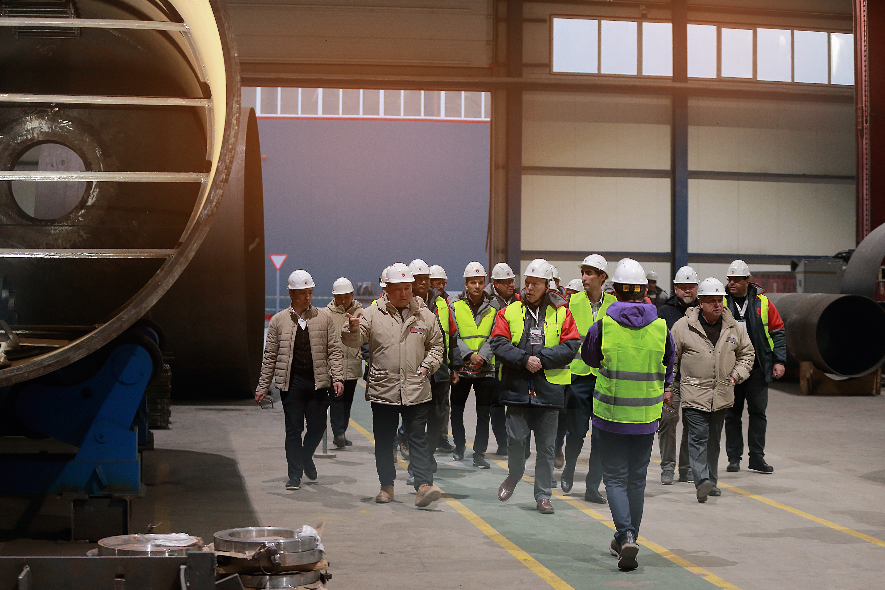

"Inson kapitali — "Infratuzilma boshqaruvchisi" yetishmasligi"
Yuqori texnologik infratuzilmani (masalan, tezyurar poyezdlar, raqamli energiya tarmoqlari) boshqaradigan malakali kadrlar defitsiti. Qimmat texnika va tizimlar noto‘g‘ri ekspluatatsiya tufayli tez ishdan chiqadi.
2026-yilda O‘zbekiston iqtisodiyoti o‘zining texnologik yuksalish cho‘qqisiga chiqqan bir davrda, mamlakat oldida turgan eng o‘tkir muammolardan biri — yuqori texnologik infratuzilmani boshqaruvchi professional kadrlar, ya’ni "Infrastruktura menejerlari"ning yetishmasligi bo‘lib qolmoqda. Bu muammo shunchaki ishchi kuchi tanqisligi emas, balki milliardlab dollar investitsiya kiritilgan tizimlarning barqarorligiga tahdid soluvchi strategik bo‘shliqdir. Hozirgi kunda tezyurar poyezdlar tarmog‘ining kengayishi, "aqlli" energiya tizimlari (Smart Grid) va raqamli boshqariladigan sanoat ob’ektlari soni ortib borayotgan bir sharoitda, ushbu murakkab texnikani xalqaro standartlar darajasida ekspluatatsiya qiladigan mutaxassislar defitsiti yaqqol sezilmoqda.
Masala shundaki, davlat va xususiy sektor eng zamonaviy texnologiyalarni sotib olishga mablag‘ ajratgani holda, ularni boshqaradigan inson kapitalini tayyorlashga bir xil sur’atda investitsiya kiritmagan. Buning oqibatida biz "texnologik nomutanosiblik" holatiga duch keldik: qo‘limizda eng so‘nggi rusumdagi uskunalar bor, biroq ularning ichki algoritmlari, dasturiy ta’minoti va nozik texnik talablari bilan ishlay oladigan mahalliy kadrlar barmoq bilan sanarli. Bu bo‘shliq ayniqsa tezyurar temir yo‘llar segmentida yaqqol ko‘rinadi; poyezdlarning harakatlanish xavfsizligi va texnik holatini monitoring qiluvchi raqamli tizimlar noto‘g‘ri sozlanishi yoki oddiy profilaktika qoidalariga amal qilinmasligi tufayli qimmatli detallarning muddatidan oldin eskirishi kuzatilmoqda.

Energiya tizimida esa raqamli nimstansiyalarni boshqarishdagi xatolar butun boshli hududlarning energiyasiz qolishiga yoki tizimdagi kuchlanishning keskin o‘zgarishi natijasida qimmatbaho uskunalarning yonib ketishiga sabab bo‘lyapti. Muammoning tub ildizi shundaki, oliy ta’lim tizimi hamon nazariy bilimlarga tayanmoqda, amaliyotda esa 2026-yilning talablariga javob beradigan laboratoriyalar va simulyatorlar yetishmaydi. Natijada, diplomli yosh mutaxassis ish joyiga kelganda, u yerdagi "kosmik" texnologiya qarshisida o‘zini ojiz his qiladi. Bu vaziyatda davlat majburan xorijiy konsalting kompaniyalarini va chet ellik muhandislarni juda yuqori narxda yollashga majbur bo‘lmoqda, bu esa loyihalarning operatsion xarajatlarini bir necha barobarga oshirib yuboradi. Eng achinarlisi, noto‘g‘ri ekspluatatsiya tufayli texnikaning xizmat muddati ikki-uch barobarga qisqarib ketmoqda: masalan, 20 yil xizmat qilishi kerak bo‘lgan tizim 5-7 yildayoq kapital ta’mirga muhtoj bo‘lib qolyapti. Bu milliy budjet uchun "teshik qozon" effektini beradi — biz yangi infratuzilma qurish o‘rniga, eskilarini noto‘g‘ri ishlatganimiz sababli ularni tiklashga mablag‘ sarflashda davom etaveramiz.
2026-yilning ushbu kadrlar inqirozi bizga shuni anglatdiki, infratuzilmani modernizatsiya qilish — bu faqat temir va simlarni yangilash emas, balki birinchi navbatda o‘sha temirni tushunadigan, his qiladigan va uni boshqara oladigan "aqlli kadrlar" qatlamini yaratishdir. Agar hozirda inson kapitaliga yondashuv tubdan o‘zgarmasa, qanchalik qimmat texnika sotib olmaylik, u samarasiz boshqaruv va bilimsizlik tufayli oddiy metallolomga aylanish xavfi ostida qolaveradi.